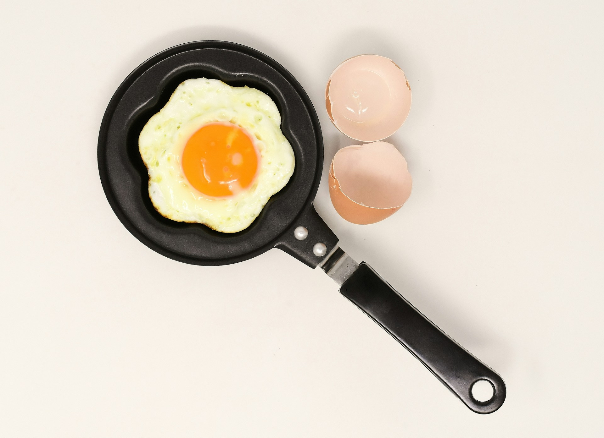
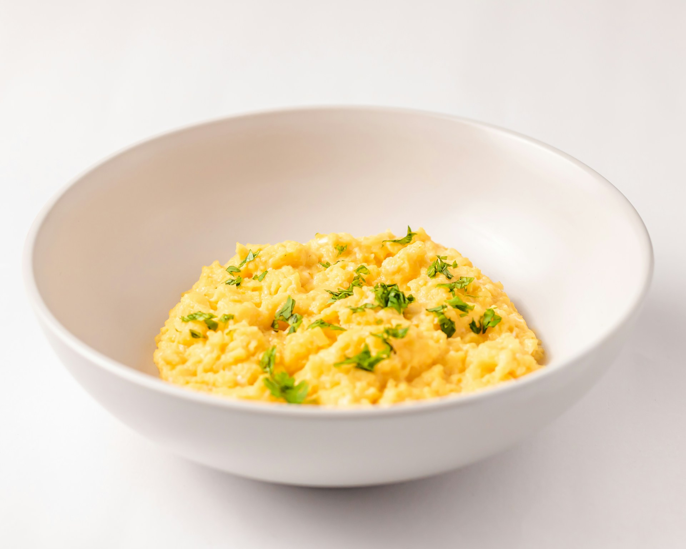
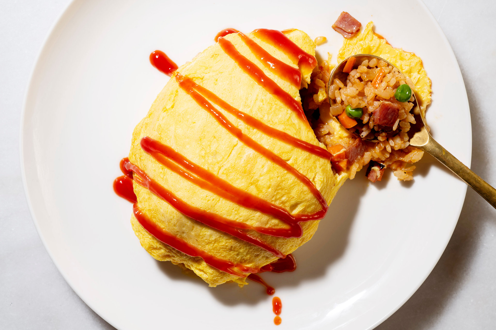
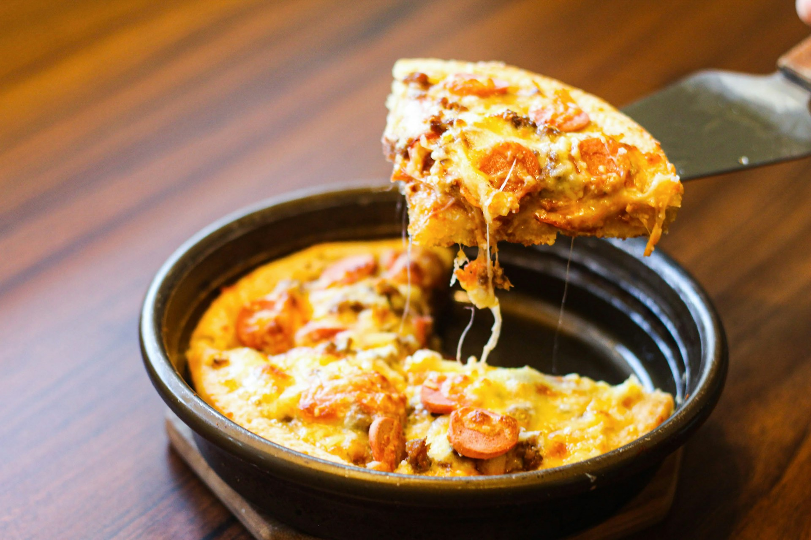

Sunny Side Up

Sunny side up eggs are a simple yet beloved breakfast staple. Cooked without flipping, they maintain their
sunny, runny yolk, which is perfect for dipping into toast or fries. The yolk is packed with nutrients like
vitamins A, D, and E, along with healthy fats, making it not only delicious but also nutritious. Their quick
cooking time and beautiful presentation make sunny side up eggs a popular choice for a fast, wholesome meal.
The yolk's texture can be customized, from fully runny to slightly set, depending on personal preference.
Another beauty of sunny side up eggs lies in their versatility. Whether served on their own or as a topping
for avocado toast, burgers, or salads, they elevate the flavors of any dish they’re paired with. The slight
customization of how set the yolk is also adds a personal touch, whether you prefer it fully runny or slightly
thickened. Paired with herbs, spices, or sauces, sunny side up eggs can easily be transformed into a gourmet
treat. With their simplicity, flavor, and nutritional benefits, it’s no wonder they remain a breakfast staple
across the globe.
Scrambled Egg

Scrambled eggs may seem like a simple dish, but achieving the perfect scramble is an art form. The difference
between fluffy, light eggs and a dense, overcooked mess comes down to technique. Low and slow cooking yields a
creamy, custard-like texture, while high heat creates airy, fluffier eggs. Ancient Romans were some of the
first to document their love for scrambled eggs, and today, they remain a global breakfast staple. What makes
scrambled eggs so appealing is their simplicity combined with versatility. A pinch of salt and butter may be
all you need for a satisfying meal, but the dish also easily welcomes additions like cheese, herbs, or sautéed
vegetables, allowing you to elevate it into something more.
Perfect scrambled eggs require a bit of attention and patience. The trick is to remove them from the heat just
before they’re fully set since they continue to cook from residual heat. This prevents them from becoming dry
or rubbery and ensures a soft, velvety finish. Their versatility also makes scrambled eggs a base for endless
flavor profiles—add fresh herbs for a burst of color, or fold in some cream cheese for extra creaminess.
Whether you’re making a quick weekday breakfast or hosting a weekend brunch, scrambled eggs are the perfect
combination of simplicity and sophistication, proving that sometimes, the best dishes are the ones that focus
on doing the basics brilliantly.
Omelette
Omelettes are the ultimate customizable dish, originating in France and embraced worldwide. Whether filled
with cheese, meats, or vegetables, omelettes can be simple or extravagant, adapting to any palate. Globally,
variations like the Indian masala omelette or Spain’s tortilla de patatas showcase its versatility and
cultural appeal.
Nutritionally, omelettes are a high-protein option, and fillings can further enhance their health benefits.
They’re quick to prepare, making them ideal for breakfast, brunch, or dinner. The endless possibilities of
ingredients allow you to make this timeless dish truly your own.
Omurice

Omurice is a Japanese comfort food that combines two beloved dishes: an omelette and fried rice. The dish
typically consists of a fluffy omelette wrapped around a filling of seasoned fried rice, often flavored with
ketchup and mixed with chicken, vegetables, or other proteins. The omelette is served with additional
ketchup drizzled on top in a signature zigzag pattern or sometimes with a rich demi-glace sauce for extra
depth. Omurice is a popular choice in Japanese cafés and home kitchens, appreciated for its balance of
savory, tangy flavors and its playful presentation. It’s a perfect example of Japan’s "yoshoku"
cuisine—Western-inspired dishes adapted to local tastes.
Frittata

A frittata is Italy’s answer to the omelette but with a twist. Unlike an omelette, which is typically
folded, a frittata is open-faced and packed with ingredients such as vegetables, meats, cheeses, and herbs,
all mixed directly into the egg batter. It’s first cooked on the stovetop and then finished in the oven to
create a thick, golden crust. Often served in slices like a pie, frittatas can be enjoyed hot or cold,
making them perfect for brunch, lunch, or a picnic. Its versatility allows for endless variations based on
seasonal ingredients, and it’s known for being a satisfying, protein-packed dish that’s also elegant and
easy to prepare.